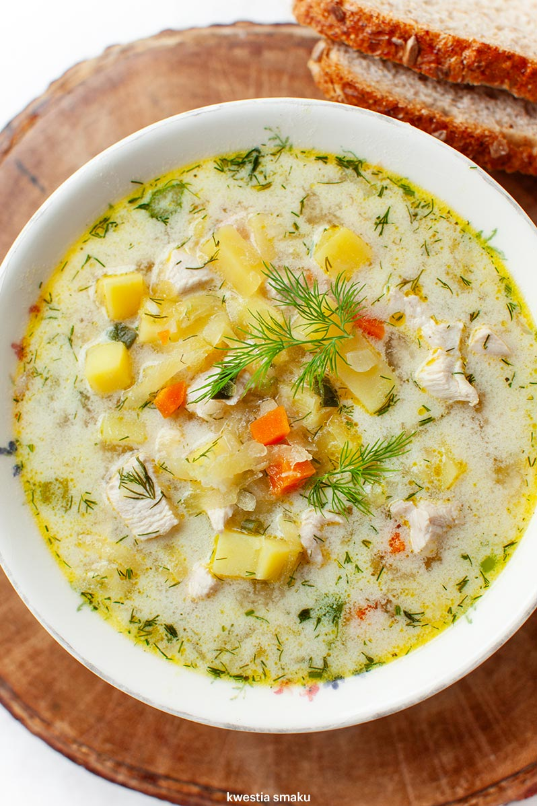

Cucumber soup

Cucumber soup is a traditional Polish and Lithuanian soup (Polish: Zupa ogórkowa). It is made from sour, salted cucumbers and potato. Occasionally, rice is substituted for the potatoes. Make sure to use cucumbers in brine and NOT dill pickles. Cucumbers in brine are cucumbers that are naturally fermented and have a pleasantly sour flavor. On the ingredient list you should see only cucumbers, water, and salt (there can also be spices). Yes, I know this recipe is called dill pickle soup, but how should I call it? Cucumbers in brine soup? Ogórki kiszone soup? 😉 Jokes aside – This soup is a traditional Polish recipe, called “zupa ogórkowa” which can be directly translated to cucumber soup.
Shopping list 
For chicken broth (base)
- 700g of meat for broth
- Half celery
- Parsley
- Carrot
- Leek
- Herbs and spices:
For the cucumber soup
- Pound of pickled cucumbers (Polish style or Kosher)
- 3-5 medium size potatoes
- Optionally: 30% Sour Cream
 Prep Time
Prep Time Cook Time
Cook Time